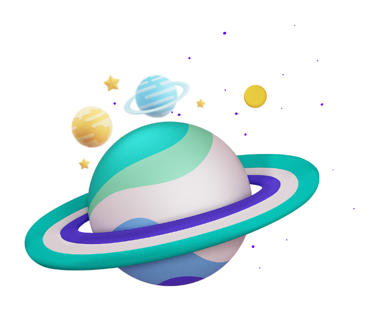

Explore o mundo da ciência com a gente

Alunos do Clube de Ciências do Biopark Educação somam 10 premiações em 2021.
O Clube de Ciências, projeto desenvolvido pelo Biopark, foi a única iniciativa brasileira a ser finalista do Prêmio Inspiring Solutions.
11º FECITEC - Feira de Ciência - 1º Lugar - Trabalho: Produção de Bioplástico com resíduo de cápsula mole de gelatina.
11º FECITEC - Feira de Ciência - Prêmio fecitequinha - Trabalho: Sonífero natural com óleo essencial de cravo como alternativa ao uso de fumaça para abelhas.
11º FECITEC - Feira de Ciência - Rocket League - Robô guia para deficientes visuais.
11º FECITEC - Feira de Ciência - Prêmio destaque C.vale - Trabalho: Potencial inseticida dos extratos aquosos de ora-pro-nóbis e penicilina frente larvas do cascudinho.

11º FECITEC - Feira de Ciência - Prêmio medicinais e credencial para Fecitec - Trabalho: Extrato aquoso de aloe vera como protetor térmico em folhas de citrus limon.
Na AM&TECH - Arranjo Municipal de Tecnologia, Ciência, Inovação e Empreendedorismo de Toledo. Os alunos ficaram em 1º e 2º na Batalha de Robôs.
Na Olimpíada Nacional de Ciências - ONC, promovida pelo Ministério da Ciência, Tecnologia e Inovações, receberam uma medalha de menção honrosa pela participação.
Premiação internacional pelo
IASP (Associação
internacional
de parques científicos e áreas de
inovação).
Desenvolvimento de habilidades e
competências (proatividade, senso
crítico e criatividade,
trabalho em
equipe, dentre outras).
Pré-clube dos 4 aos 8 anos
Quarta-feira - 4 e 5 anos
Sexta-feira - 6 à 8 anos
Faixa etária: de 9 à 17 anos
Terça-feira – 6º, 7ºano e Ensino médio
Quarta-feira – 4º e 5ºano
Quinta-feira – 6º e 7ºano
Sexta-feira – 8º e 9ºano Ensino médio
Incentivo à pesquisa científica
desde o ensino fundamental
Faixa etária: 4-8 anos:
Manhãs das 8:30h às 12:00
Tardes das 14h às 17:30
Faixa etária: 9-17 anos:
Manhãs das 8h às 11:30
Tardes das 14h às 17:30
"Tecnologia e diversão unidas a bastante conhecimento, aprendizagem e, claro, encantamento, como o presidente do Biopark"
Dr. Luiz Donaduzzi
“Aprender ciências é divertido”
Muitas Crianças
“Os dez prêmios recebidos esse ano e a participação dos alunos do Clube comprovam que a real aplicação do conhecimento está fazendo sentido e que a aprendizagem está sendo realmente significativa.”
Coordenadora
Graziella Florence Miola